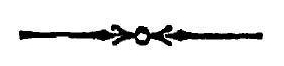

श्रीमन्महामाद्देश्वराचार्याभिनवगुप्तविरचिते
श्रीजयरथकृत विवेकाव्यटीकोपेते
अथ
श्रीतन्त्रालोके ।

श्रीमन्महामाद्देश्वराचार्याभिनवगुप्तविरचिते
श्रीजयरथकृत विवेकाव्यटीकोपेते

पञ्चविंशतितममाह्निकम् ।
भीममधिष्ठाय वपुर्भवमभितो भावयन्निव यः ।
प्रभवति हृदि भक्तिमतां शिवप्रदोऽसौ शिवोऽस्तु सताम् ॥
इदानीं द्वितीयार्धेन श्राद्धविधिमभिधातुमाह
अथ श्राद्धविधिः श्रीम-
त्षणर्धोक्तो निगद्यते ॥ १ ॥
ननु त्रिकदर्शने कुत्र नाम असौ श्राद्धविधि-
रुक्त इत्याशङ्कयाह
सिद्धात सूचितोऽसौ
मूर्तियागनिरूपणे ।
सूचित इति नतु साक्षात् स्वकण्ठेनोक्तः ।
यदुक्तं तत्र
'मृतकस्य गृहे वाथ कर्तव्यं वीरभोजनम् ।